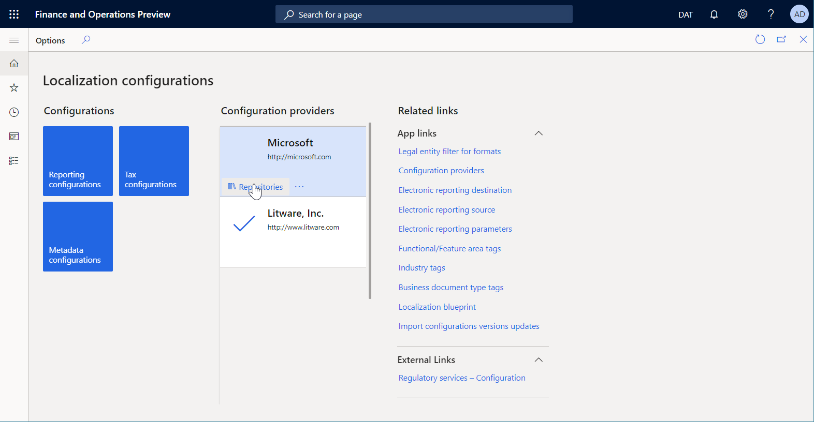
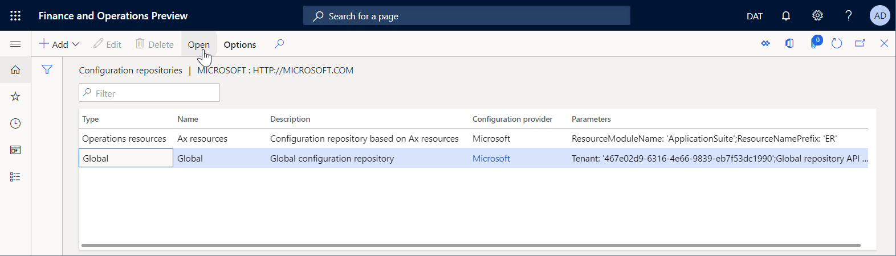
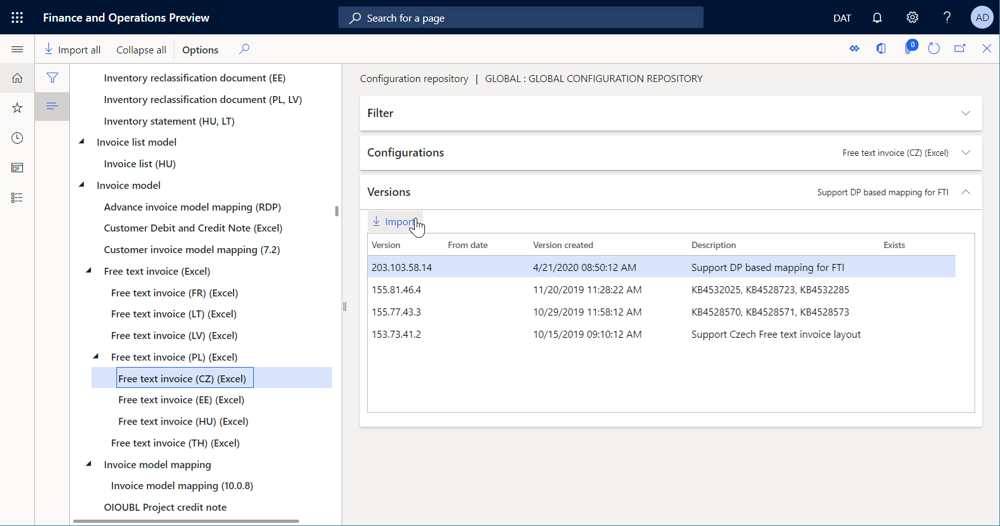
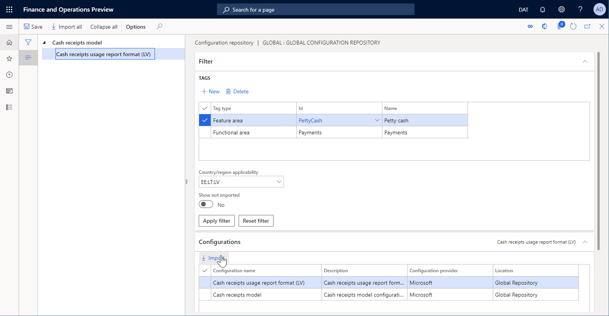

Laden Sie ER-Konfigurationen aus dem globalen Repository des Konfigurationsdienstes herunter
[!include[banner](../includes/banner.md)]In diesem Thema wird erläutert, wie Sie ER-Konfigurationen (Electronic Reporting) aus dem globalen Repository des Konfigurationsdienstes herunterladen. Weitere Informationen finden Sie unter Microsoft Dynamics 365 for Finance and Operations – Regulatory services.
Konfigurations-Repository öffnen
Melden Sie sich bei der Dynamics 365 Finance Anwendung mithilfe der folgenden Rollen an:
- Entwickler für elektronische Berichterstellung
- Funktionaler Berater für elektronische Berichterstellung
- Systemadministrator
Wechseln Sie zu Organisationsverwaltung > Arbeitsbereiche > Elektronische Berichterstellung.
Wählen Sie im Abschnitt Konfigurationsanbieter die Kachel Microsoft aus.
Klicken Sie auf der Kachel Microsoft auf Repositorys.

Auf der Seite Konfigurationsrepositorys wählen Sie im Raster ein vorhandenes Repository vom Typ Global aus. Wenn dieses Repository nicht im Raster angezeigt wird, führen Sie die folgenden Schritte aus:
- Wählen Sie zum Hinzufügen neuer Repository Hinzufügen.
- Wählen Sie Global als Repository-Typ, und wählen Sie dann Repository erstellen.
- Wenn Sie aufgefordert werden, folgen Sie den Autorisierungsanweisungen.
- Geben Sie einen Namen und eine Beschreibung für das Repository ein und wählen Sie dann OK, um den neuen Repository-Eintrag zu bestätigen.
- Wählen Sie im Raster das neue Repository vom Typ Global aus.
Wählen Sie Öffnen, um die Liste der ER-Konfigurationen für das ausgewählte Repository anzuzeigen.

Einzelne Konfiguration importieren
Auf der Seite Konfigurations-Repositorys wählen Sie auf der Seite im Konfigurationsbaum die gewünschte ER-Konfiguration aus.
Wählen Sie im Inforegister Versionen die erforderliche Version der ausgewählten ER-Konfiguration aus.
Wählen Sie Importieren, um die ausgewählte Version vom globalen Repository auf die aktuelle Finance and Operations Instanz herunterzuladen.
Note
Die Schaltfläche Importieren ist nicht für ER-Konfigurationsversionen verfügbar, die in der aktuellen Instanz bereits vorhanden sind.

Importierte Konfigurationen filtern
Auf der Seite Konfigurations-Repositorys erweitern Sie im Konfigurationsbaum die Seite Filter Infiregister.
In dem Raster Stichworte fügen Sie alle benötigten Tags hinzu.
In dem Feld Anwendbarkeit des Landes/der Region wählen Sie in diesem Feld die entsprechenden Länder-/Regionalcodes aus und wählen Sie dann Filter anwenden.
Note
Das Inforegister Konfigurationen zeigt alle Konfigurationen an, die die angegebenen Auswahlbedingungen erfüllen.
Auf dem Inforegister Konfigurationen wählen Sie Importieren, um die gefilterten Konfigurationen aus dem globalen Repository auf die aktuelle Instanz herunterzuladen.
Im Inforegister Konfigurationen wählen Sie Filter zurücksetzen, um die angegebenen Auswahlbedingungen zu bereinigen.

Note
Abhängig von den ER-Einstellungen werden Konfigurationen überprüft, nachdem diese importiert wurden. Sie werden über alle Inkonsistenz-Probleme benachrichtigt, die ermittelt werden. Sie müssen diese Probleme beheben, bevor Sie die importierten Konfigurationsversionen verwenden können. Weitere Informationen finden Sie in der Liste der zugehörigen Ressourcen.
Note
ER-Konfigurationen können so konfiguriert werden, dass sie von anderen Konfigurationen abhängig sind. Daher werden möglicherweise zusammen mit einer ausgewählten Konfiguration andere Konfigurationen automatisch importiert. Weitere Informationen zu Konfigurationsabhängigkeiten finden Sie unter Definieren Sie die Abhängigkeit von ER-Konfigurationen von anderen Komponenten.